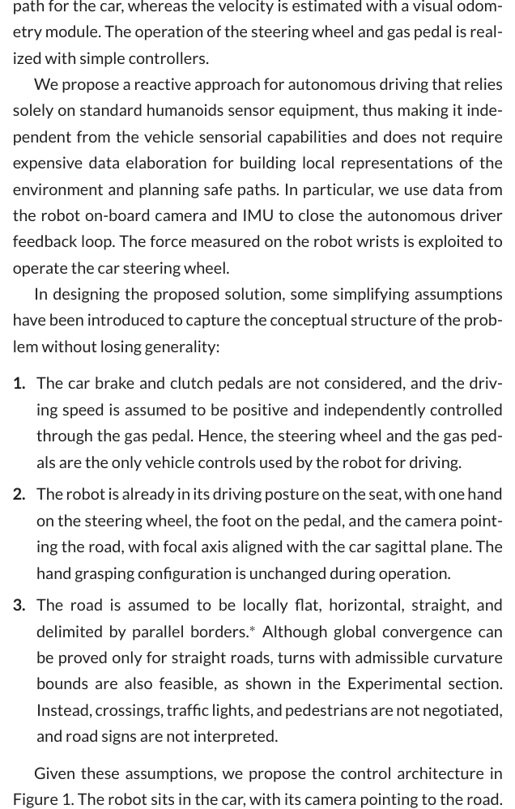
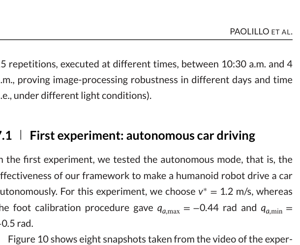

휴머노이드가 차량을 개조하지 않고 사람용 핸들·페달을 직접 조작해 운전하는 연구 계보 (DRC era, 2014–2018)
박현철 (KAIST) · 4 paper cards · v2차 (심화 카드 · 그림 클릭 확대) · 2026-06-25
자율주행차는 drive-by-wire라 조향·가감속이 함수 호출처럼 쉽지만, 휴머노이드가 비개조 차량을 모는 것은 사람용 핸들·페달을 물리적으로 다뤄야 하는 기계 시스템이다 — 스스로 정렬·안정화하고 차량 상태를 센서로 추정해야 한다. 본 리뷰는 DARPA Robotics Challenge(DRC)를 전후한 4편으로, 학습·언어를 통합한 휴머노이드 운전이라는 본 연구의 학술적 자리매김을 위한 선행을 정리한다.
§1. 비전·센서 기반 자율 운전 v2차 — 심화
Line AConference2014
Toward Autonomous Car Driving by a Humanoid Robot: A Sensor-Based Framework
A. Paolillo, A. Cherubini, F. Keith, A. Kheddar, M. Vendittelli. IEEE-RAS Int. Conf. on Humanoid Robots (Humanoids), 2014. 10.1109/HUMANOIDS.2014.7041400
Fig 6 — 실험 셋업
HRP-4가 의자에 앉아 Thrustmaster 핸들·페달로 City Car Driving 게임 도로를 운전. (클릭 시 확대)
Fig 3 — 제어 구조
아래 점선(비전)이 기준 조향각 α를, 위 어드미턴스 블록이 손 힘 f를 받아 안전한 핸들 회전을 만든다. (클릭 시 확대)
TL;DRHRP-4가 차량을 개조하지 않고 사람용 핸들을 손으로 직접 돌려 운전한 첫 시연. 도로 영상에서 조향각을 정하는 비전 컨트롤러와 손 힘센서 기반 어드미턴스 제어로 분해했다 (Fig 3). 학습 없는 반응형 제어의 출발점.
로봇
HRP-4 (Kawada, 1.5 m, 34 DoF)
차량
시뮬레이터 + 실제 Thrustmaster 핸들
센서
단안 카메라 + 손목 F/T
학습 여부
없음 (visual servoing)
연구 배경
사람이 운전하려면 면허·훈련이 필요하듯, 로봇이 사람처럼 운전하려면 그 기술을 옮겨야 한다. 차량을 개조할 수 없는 재난 현장(DRC의 첫 과제)에서는 사람이 몰던 차를 그대로 몰 로봇이 필요하다. 저자들은 완전한 운전을 여러 동작 프리미티브(탑승·자세·조작·하차)로 보고, 그 중심인 '도로를 따라 차를 모는 것'만 떼어 다룬다. 핵심 난제는 로봇이 사람용 기계(핸들·페달)를 스스로 조작하는 'humanoid in the loop'.
무엇을 했는가
차량을 개조하지 않고 휴머노이드가 사람용 핸들을 직접 돌려 도로를 따라 차를 모는 닫힌 루프(closed-loop) 제어 구조를 제안하고 HRP-4로 시연했다. 당시 DRC 운전 과제 참가팀이 전부 로봇을 원격조작하던 것과 달리, 로봇이 영상을 보고 스스로 핸들을 돌린다는 점이 신규성이다.
방법론 상세
차량 운동 모델 → 조향각. 차를 단륜차(unicycle)로 보고 경로의 횡오차·방향오차를 0으로 만드는 게 목표. 앞바퀴각이 핸들각에 비례한다고 두고 기준 각속도를 핸들각 α로 환산.
비전 기반 도로 추종. 도로 두 경계가 만나는 소실점과 경계 중점을 특징으로 삼아, 둘을 0으로 보내면 차가 차선 중앙으로 수렴(corridor following 차용).
★ 어드미턴스로 손이 핸들을 돌린다(핵심). 기준 손 자세를 그대로 위치제어하면 핸들과 부딪혀 위험하므로, 손목 F/T로 잰 힘을 가상의 질량–감쇠–강성으로 흡수해 보정량 ΔT를 만든다. 방향별 강성을 달리 줘 손이 핸들 림을 따라 부드럽게 미끄러지게 한다.
차선 검출. OpenCV Canny 에지 + Hough 변환으로 단순 구현(검출 자체는 본 연구의 초점이 아니라고 명시).
결과 / 시연
City Car Driving 게임 셋업에서 경사·조도 변화가 있는 곡선 도로를 약 300초 차선 중앙을 유지하며 자율 추종했다. 실차 야외는 특징 추출 예비 시험만 수행.
한계
실차가 아닌 게임 시뮬레이터 검증. 가속(페달)은 사람 원격조작으로 단순화해 자율은 조향뿐. 차선 검출이 단순해 복잡한 실제 도로에서는 미검증.
본 연구와의 관계
"차량은 그대로 두고 휴머노이드가 운전한다 + 인간형 센서만 쓴다"는 problem framing의 학술적 기원. 본 연구는 이를 학습·언어 기반 시대로 확장한다.
Line AJournal2018
Autonomous car driving by a humanoid robot
A. Paolillo, P. Gergondet, A. Cherubini, M. Vendittelli, A. Kheddar. Journal of Field Robotics, 2018. 10.1002/rob.21731
Fig 1 — 프레임워크

지각(도로검출+속도추정) → 차량제어(조향+속도) → 로봇제어(과제기반 QP) 3단 구조. (클릭 시 확대)
Fig 10 — 완전 자율 주행

온보드 카메라로 검출된 도로 경계(빨간 선)를 따라 굽은 길 ~100m 자율 주행. (클릭 시 확대)
TL;DR사람 크기 HRP-2Kai가 비개조 일반 차량을 사람처럼 손발로 조작해 모르는 야외 길을 자율 주행. 완전자율/부분자율/텔레옵 3모드를 즉시 전환하며 DARPA DRC 결선에서 운전 과제를 완수했다.
로봇
HRP-2Kai (1.71 m, 32 DoF)
차량
Polaris Ranger XP900 (비개조, DRC와 동일)
센서
단안 카메라 + IMU + 손목 F/T (차량 센서 미사용)
학습 여부
없음 (모델기반)
연구 배경
DRC로 휴머노이드의 재난 대응 가치가 드러났고, 8개 과제 중 하나가 사람용 유틸리티 차량 운전이었다. 핵심 발상은 차를 자율차로 개조하는 대신 사람이 운전하도록 설계된 차를 그대로 두고 사람 모양 로봇이 핸들·페달을 물리적으로 조작하는 것. 그러면 차마다 센서를 심을 필요 없이 같은 로봇이 밸브·드릴 같은 다른 사람용 도구도 다룰 수 있다. 앞선 HRP-4 시뮬레이션 예비연구를 실차로 확장한 논문이다.
무엇을 했는가
표준 휴머노이드 센서(단안·IMU·손목 F/T)만으로 차량의 어떤 정보에도 의존하지 않는 순수 반응형(reactive) 자율 운전 구조를 제안. 기여는 ①조향 제어 ②속도 제어(광류+IMU 융합) ③어드미턴스 제어 ④세 운전 모드. 모듈식이라 켜고 끌 수 있고, 사전 지도가 없어 처음 보는 길도 달린다.
방법론 상세
모델링. 차량을 단륜차로 근사 — 핸들각 α와 차량 각속도 ω를 선형, 페달 기울기와 가속도를 선형으로 둔다.
도로 검출. HSV 색분할 → 형태학 연산 → 컨벡스 헐 → Canny → Hough로 도로 두 경계를 뽑고 소실점·중점을 정의. 검출 실패 대비 칼만 추적·복구.
★ 속도 추정(단안의 핵심). GPS·속도계 없이 dense 광류(Farneback)로 진행 속도를, 가슴 IMU로 가속도를 재서 칼만필터로 융합 — 광류의 스케일 문제·엔진 진동 노이즈를 안정화한다.
조향·속도 제어. 소실점·중점을 0으로 보내는 비주얼 서보잉으로 핸들각을, 목표 속도 오차에 PID(경사 보상용 적분 포함)로 페달각을 만든다.
로봇 제어. 어드미턴스로 안전 파지 + 과제기반 QP가 관절 한계·자기충돌·접촉 제약 아래 전신 동작을 푼다.
운전 모드. 완전자율 / 부분자율(조향 자율·사람 보조) / 텔레옵을 조이스틱으로 즉시 전환.
결과 / 시연
AIST 츠쿠바 야외에서 완전자율 v*=1.2 m/s로 굽은 길 ~100m(10회 중 9회 성공), 모드 전환으로 130m·160초 무정지 주행, DRC 결선에서 부분자율로 양일 모두 운전 과제 완수(1분 28초·32초, 사람 개입 15회).
한계
여전히 고전 모델기반(학습 없음). 단안 광류 속도추정은 저속·엔진 진동에 민감하고, 영상 처리 실패가 곧 주행 실패(1/10). 급커브 구간은 사람 텔레옵으로 넘겼다.
본 연구와의 관계
본 주제의 가장 직접적 선행(실차·야외). 여전히 고전 모델기반이라 학습·언어 통합이 본 연구의 차별점이 된다.
§2. DRC 실전 통합 시스템 v2차 — 심화
Line BConference2014
Perception and Control Strategies for Driving Utility Vehicles with a Humanoid Robot
(a) 손 peg를 휠 스포크에 끼워 도는 peg-in-wheel 조향, (b) 왼발 발목 피치로 페달 압력 조절. (클릭 시 확대)
TL;DRDRC용 휴머노이드(DRC-Hubo)가 골프카트형 유틸리티 차량 2종을 drive-by-wire 없이 손·발로 직접 조작해 자율 주행한 최초급 실증 (Fig 7).
로봇
DRC-Hubo (Hubo 2+ 기반, 1.40 m, 33 DoF)
차량
Club Car DS · Polaris Ranger (둘 다 비개조)
센서
스테레오 3캠 + Hokuyo 라이다 + IMU
학습 여부
없음 (기하·정합 기반)
연구 배경
DRC의 Vehicle 단계는 로봇이 골프카트형 차량을 몰아 장애물을 피해 목표 지점까지 가게 했다. 휴머노이드 운전은 자율주행차와 근본적으로 다르다 — ①무게·전력·균형 제약으로 센서·연산이 빠듯하고, ②차 안에 앉으면 시야가 본질적으로 가려져 view planning이 필요하며, ③drive-by-wire가 아니라 휠·페달을 직접 다뤄 스스로 정렬·안정화하고 미끄러짐을 감시해야 한다(차량 상태값도 대시보드·센서로 추정).
무엇을 했는가
범용 휴머노이드가 비개조 차량을 운전할 수 있다는 실현 가능성을 실증. 저자들이 찾은 선행(HRP-1)이 전부 영상 기반 원격조작이던 것과 달리, ①차량과 인터페이스해 명령대로 가감속·조향하는 지각·물리 방법과 ②가림 시야 속 센싱·동작 계획을 제시했다.
방법론 상세
자율 인터페이싱. 중립 자세에서 라이다로 대시보드 포인트클라우드를 떠 어느 차량인지 인식(대시보드 폭 차이로 구분).
차내 자기 위치추정. 라이다 클라우드를 차량별 기준과 RANSAC + FPFH + ICP로 정합해(~5초) 운전석 기준 pose를 얻는다.
운전자세 이동. 중립→운전자세로 'scooting'이라는 정형화된 4족 보행으로 옮기고, 매 사이클 재스캔·재정합.
★ 조향(peg-in-wheel). 손 peg를 휠 스포크 사이에 끼워 원궤적으로 다이얼링 — 특이점이 없어 큰 각도에서도 재파지 불필요. IK를 룩업테이블화해 온라인 보간. 손각≠휠각이 되는 백래시(60~90°)가 핵심 한계.
속도 제어. 왼발 발목 피치로 페달 압력, 스테레오 비주얼 오도메트리(libviso2)로 속도 피드백. 능동 제동은 미구현.
모션 제어. 'stop-to-steer' — 정지 상태에서만 휠을 돌려 Dubins 경로 주행. 상위는 OctoMap 점유격자 + Ackermann SBPL 플래너.
결과 / 시연
대시보드 정합·pose 추정은 평균 ~5초(1회 빼고 양호). 조향·속도 작동은 두 차량서 광범위 시험, stop-to-steer는 Polaris 실내외 시연. 완전 자율 통합 주행·매핑·SBPL은 시뮬레이션 + 캠퍼스·골프장 5km+ 수동주행으로 오프라인 검증.
한계
저자 스스로 '예비적 실현 가능성 데모'라 못박는다. 실증 주행(stop-to-steer)은 사람이 경로 세그먼트를 주는 텔레옵이었고 완전 자율은 시뮬레이션 수준. 매우 저속(≤2.5 m/s), 능동 제동·후진·기어·시동 미구현, 조향 백래시, view planning·계기 판독은 향후 과제.
본 연구와의 관계
사람용 조작계 직접 조작의 실물 선례. 본 시스템이 요구하는 물리적 인터페이스의 출발점이자, 백래시·저속 같은 물리적 난제의 구체적 목록.
Line BConference2015
Control Strategies for a Humanoid Robot to Drive and then Egress a Utility Vehicle
H. Jeong, J. Oh, M. Kim, K. Joo, I. S. Kweon, J.-H. Oh (KAIST). IEEE-RAS Humanoids, 2015. 10.1109/HUMANOIDS.2015.7363447
Fig 8 — Wagon Model 자율 주행
Wagon Model 블록도 — 한 라이다·IMU로 조향·속도를 결합 제어, 급조향 시 가속 페달에서 발을 뗀다. (클릭 시 확대)
Fig 11 — 수동 운전 UI
DRC Finals 실전 운전 UI — 조향각으로 만든 궤적을 영상에 투영(레인 투영)해 거리감을 보완. (클릭 시 확대)
TL;DRDRC Finals 2015 1위 KAIST의 DRC-HUBO+가 비개조 차량을 운전하고 직후 스스로 하차(egress)한 제어 전략. 핵심은 정교함이 아니라 최소 센서 + 단순·강건한 고전 제어.
로봇
DRC-HUBO+ (DRC Finals 2015 우승, 1.70 m, 30 DoF)
차량
Polaris Ranger XP900 (비개조)
센서
카메라 2대 + 라이다 1대 + IMU
학습 여부
없음 (고전 제어)
연구 배경
재난 지역 접근은 로봇이 걷는 것보다 차를 모는 편이 에너지·시간을 크게 아낀다 → DRC 2015 운전 과제. 그런데 자율주행차(Velodyne·GPS 다수)와 달리 DRC 로봇은 다른 조작 과제도 해야 해 센서·연산·대역폭이 빈약하고 통신 지연으로 클라우드 연산도 못 쓴다. 게다가 하차(egress)는 차체와 큰 힘 상호작용인데, 고감속·고강성 관절은 역구동성이 낮아 외력에 잘 적응하지 못한다.
무엇을 했는가
최소 센서 운전 알고리즘(Wagon Model)과 자율 오판 대비 레인 투영 텔레옵을 병행(실패가 허용 안 되는 실전용 백업). 고감속 팔 한계를 넘는 모터 제어(게인 오버라이드·비상보 스위칭·마찰 보상)와 하차용 직교 하이브리드 위치/힘 제어를 제시. 이 전략으로 DRC Finals 2015 운전+하차 과제를 완수(운전 최단)했다.
방법론 상세
장애물 검출(운전). 장애물을 직선으로 가정, 라이다 점에 RANSAC으로 선분을 얻고, IMU 차량 방향각과의 차이로 목표 방향·위치를 정한다.
★ Wagon Model 자율 조향. cross-track·비례오차 제어의 한계를 피해, '사람이 수레를 끌면 수레가 따라 방향을 잡는' 발상으로 목표에서 3차 스플라인 궤적·일정 반지름 원을 써 조향각을 산출. 급조향이 포화되면 페달에서 발을 떼게 한다. 한 라이다·IMU만으로 조향·속도를 결합 제어.
수동 운전(레인 투영). 조향각으로 만든 Ackerman 궤적을 영상에 겹쳐, 좁은 화각·렌즈 왜곡으로 부족한 거리감을 보완.
고감속 매니퓰레이터 제어. 게인 오버라이드(PD 게인을 행렬로 가변), 비상보 스위칭(제동 효과 제거로 유연성 확보), 모델 기반 마찰 보상.
★ 하차 하이브리드 위치/힘 제어. 손끝 위치·속도와 목표 힘으로 직교 힘을 산출, Jacobian 전치로 관절 토크화(마찰·중력 보상). 수평면은 컴플라이언스로, 위 방향은 힘으로 롤케이지를 당겨 착지 충격 완화. 옆으로 앉아(sit sideways) 운전해 하차 시 다리를 빼낼 필요를 없앴다.
결과 / 시연
DRC Final 운전 47초(IHMC 81·MIT 91 대비 전 팀 최단), 하차 약 2분 10초. 최소 센서·단순 제어로 실전 운전+하차를 완수하며 종합 1위.
한계
안정용 보조 장치(스티어링 그립·페달 와이어 링크)를 일부 장착. 정밀 주행보다 실전 완수·강건성에 초점을 둔 단순 제어이며, 고감속 관절의 낮은 역구동성을 제어로 우회한 것이지 본질적 컴플라이언스는 아니다.
본 연구와의 관계
실전 검증된 최소-센서 운전 + 하차 파이프라인. 강건성 baseline이자, egress까지 포함한 과제 범위의 참고점.